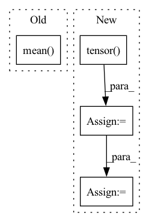

Pattern ID :2133
Before Change
advantage_lst.reverse()
advantage_ = torch.tensor(advantage_lst, dtype=torch.float).to(self.device)
returns_ = advantage_ + old_value_
advantage_ = (advantage_ - advantage_.mean() )/(advantage_.std()+1e-3)
for i in range(self.K_epoch):
for state,action,reward,next_state,done_mask,old_log_prob,advantage,return_,old_value \
in self.data.choose_mini_batch(self.minibatch_size ,state_, action_, reward_, next_state_, done_mask_, \After Change
data = self.data.sample(self.T_horizon)
states, actions, rewards, next_states, done_masks, old_log_probs = data["state"], data["action"], data["reward"], data["next_state"], data["done"], data["log_prob"]
states = torch.tensor( states) .float()
actions = torch.tensor(actions).float()
rewards = torch.tensor(rewards).float()
next_states = torch.tensor(next_states).float()
done_masks = torch.tensor(done_masks).float()
old_log_probs = torch.tensor(old_log_probs).float()
old_values = self.v(states).detach()
td_target = rewards + self.gamma * self.v(next_states) * done_masks
delta = td_target - old_values
delta = delta.detach().cpu().numpy()
advantage_lst = []
advantage = 0.0
for idx in reversed(range(len(delta))):
if done_masks[idx] == 0:
advantage = 0.0
advantage = self.gamma * self.lmbda * advantage + delta[idx][0]
advantage_lst.append([advantage])
advantage_lst.reverse()
advantages = torch.tensor(advantage_lst, dtype=torch.float).to(self.device)
returns = advantages + old_values
advantages = (advantages - advantages.mean())/(advantages.std()+1e-3)
for i in range(self.K_epoch):
for state,action,reward,next_state,done_mask,old_log_prob,advantage,return_,old_value \In pattern: SUPERPATTERN
Frequency: 3
Non-data size: 4
Instances Fragment ID: 9153320
Project Name: seolhokim/mujoco-pytorch
Commit Name: 87e9db1820bc2af3e9af6d55a55dbe4e6dd00bf4
Time: 2021-05-09
Author: kilmya1@naver.com
File Name: agent.py
M Class Name: PPO
N Class Name: PPO
M Method Name: train_net(3)
N Method Name: train_net(3)
M Parent Class: nn.Module
N Parent Class: nn.Module
M File Name: agent.py
N File Name: agent.py
M Start Line: 41
M End Line: 60
N Start Line: 42
N End Line: 70
Before Change
// avg_loss among all data
loss_dict = {
f"val/{k}":
torch.stack([output[k] for output in outputs]).mean() .item()
for k in outputs[0].keys()
}
self.log_dict(loss_dict, sync_dist=True)After Change
def validation_epoch_end(self, outputs):
// avg_loss among all data
// we need to consider different batch_size
batch_sizes = torch.tensor( [
output.pop("batch_size") for output in outputs
]) .type_as(outputs[0]["loss"]) // [num_batches]
losses = {
f"val/{k}": torch.stack([output[k] for output in outputs])
for k in outputs[0].keys()
} // each is [num_batches], stacked avg loss in each batch
avg_loss = {
k: (v * batch_sizes).sum() / batch_sizes.sum()
for k, v in losses.items()
} Fragment ID: 9153326
Project Name: wuziyi616/multi_part_assembly
Commit Name: 0148c98759e6c3ff6b944136ebc93aeb67f0d421
Time: 2022-03-08
Author: dazitu616@gmail.com
File Name: multi_part_assembly/models/pn_transformer/network.py
M Class Name: PNTransformer
N Class Name: PNTransformer
M Method Name: validation_epoch_end(2)
N Method Name: validation_epoch_end(2)
M Parent Class: pl.LightningModule
N Parent Class: pl.LightningModule
M File Name: multi_part_assembly/models/pn_transformer/network.py
N File Name: multi_part_assembly/models/pn_transformer/network.py
M Start Line: 120
M End Line: 125
N Start Line: 122
N End Line: 133
Before Change
def normalize_mad(values: torch.Tensor) -> torch.Tensor:
median = values.median()
abs_dev = (values - median).abs()
mad = abs_dev.mean()
measures = abs_dev / mad / 1.4826
return measures
After Change
def normalize_mad(values: torch.Tensor) -> torch.Tensor:
if not isinstance(values, torch.Tensor):
values = torch.tensor( values)
median = values.median()
abs_dev = (values - median).abs()
mad = abs_dev.median()
measures = abs_dev / mad / 1.4826
return measures
Fragment ID: 9153331
Project Name: ain-soph/trojanzoo
Commit Name: 89acaa6879f3ec45a3ba41004117c368ce92fd65
Time: 2020-11-16
Author: ain-soph@live.com
File Name: trojanzoo/utils/tensor.py
M Class Name: AnonimousClass
N Class Name: AnonimousClass
M Method Name: normalize_mad(1)
N Method Name: normalize_mad(1)
M Parent Class:
N Parent Class:
M File Name: trojanzoo/utils/tensor.py
N File Name: trojanzoo/utils/tensor.py
M Start Line: 197
M End Line: 198
N Start Line: 196
N End Line: 200